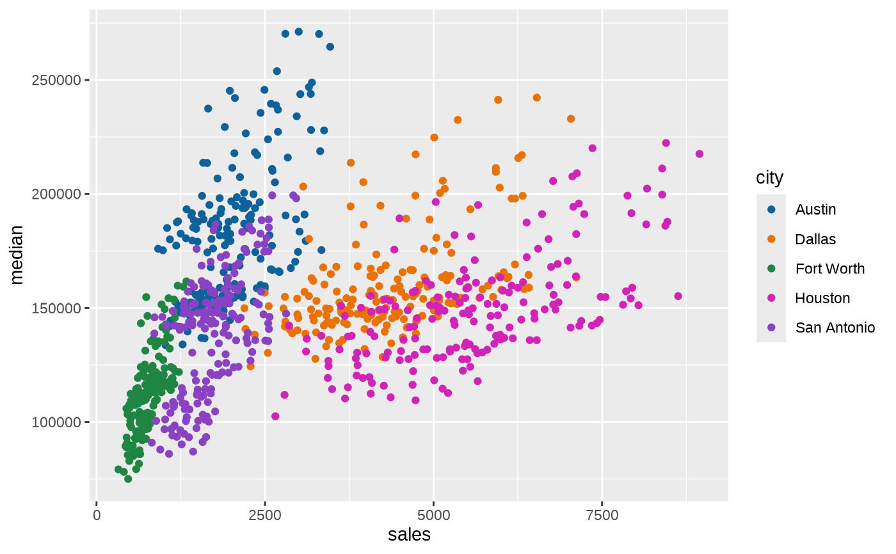

Security Differently branded color scales.
Usage
scale_color_differently_d(
name = ggplot2::waiver(),
...,
palette = "plot",
direction = 1,
aesthetics = "color"
)
scale_fill_differently_d(
name = ggplot2::waiver(),
...,
palette = "plot",
direction = 1,
aesthetics = "fill"
)
scale_color_differently_c(
name = ggplot2::waiver(),
...,
palette = "plot",
direction = 1,
values = NULL,
na.value = "grey50",
guide = "colorbar",
aesthetics = "color"
)
scale_fill_differently_c(
name = ggplot2::waiver(),
...,
palette = "plot",
direction = 1,
values = NULL,
na.value = "grey50",
guide = "colorbar",
aesthetics = "fill"
)
scale_color_differently_b(
name = ggplot2::waiver(),
...,
palette = "plot",
direction = 1,
values = NULL,
na.value = "grey50",
guide = "colorsteps",
aesthetics = "color"
)
scale_fill_differently_b(
name = ggplot2::waiver(),
...,
palette = "plot",
direction = 1,
values = NULL,
na.value = "grey50",
guide = "colorsteps",
aesthetics = "fill"
)Arguments
- name
The name of the scale. Used as the axis or legend title. If
waiver(), the default, the name of the scale is taken from the first mapping used for that aesthetic. IfNULL, the legend title will be omitted.- ...
Other arguments passed on to
ggplot2::discrete_scale(),ggplot2::continuous_scale(), orggplot2::binned_scale()to control name, limits, breaks, labels and so forth.- palette
Palette to use, one of:
primary,status, orplot(the default).- direction
Sets the order of colors in the scale. If 1, (the default) colors are as output by differently_palettes. If -1, the order of colors is reversed.
- aesthetics
Character string or vector of character strings listing the name(s) of the aesthetic(s) that this scale works with. This can be useful, for example, to apply color settings to the
colorandfillaesthetics at the same time, viaaesthetics = c("color", "fill").- values
if colours should not be evenly positioned along the gradient this vector gives the position (between 0 and 1) for each colour in the
coloursvector. Seerescale()for a convenience function to map an arbitrary range to between 0 and 1.- na.value
Missing values will be replaced with this value.
- guide
A function used to create a guide or its name. See
guides()for more information.
Examples
library(ggplot2)
# Use differently_d with discrete data
txsamp <- subset(txhousing, city %in%
c("Houston", "Fort Worth", "San Antonio", "Dallas", "Austin"))
(d <- ggplot(data = txsamp, aes(x = sales, y = median)) +
geom_point(aes(color = city)))
d + scale_color_differently_d()

# Change scale label
d + scale_color_differently_d("City\nCenter")
# Select palette to use, see ?jbplot::pal_differently for more details
d + scale_color_differently_d(palette = "primary")
# scale_fill_differently_d works just the same as
# scale_color_differently_d but for fill colors
p <- ggplot(txsamp, aes(x = median, fill = city)) +
geom_histogram(position = "dodge", binwidth = 15000)
p + scale_fill_differently_d()
# the order of color can be reversed
p + scale_fill_differently_d(direction = -1)
# Use differently_c with continuous data
(v <- ggplot(faithfuld) +
geom_tile(aes(waiting, eruptions, fill = density)))
v + scale_fill_differently_c()
v + scale_fill_differently_c(palette = "primary")
# Use differently_b to bin continuous data before mapping
v + scale_fill_differently_b()